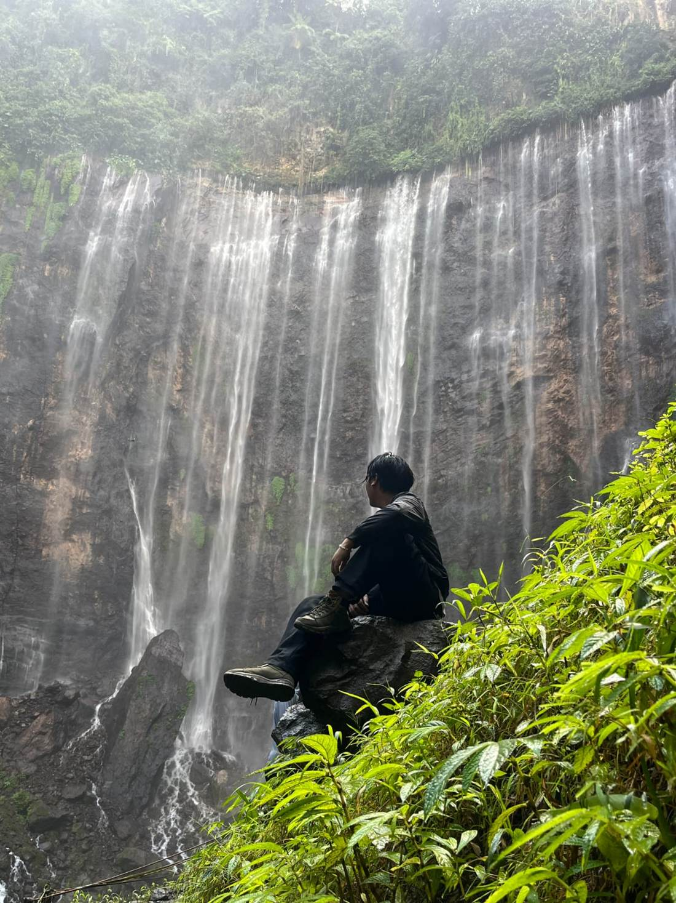
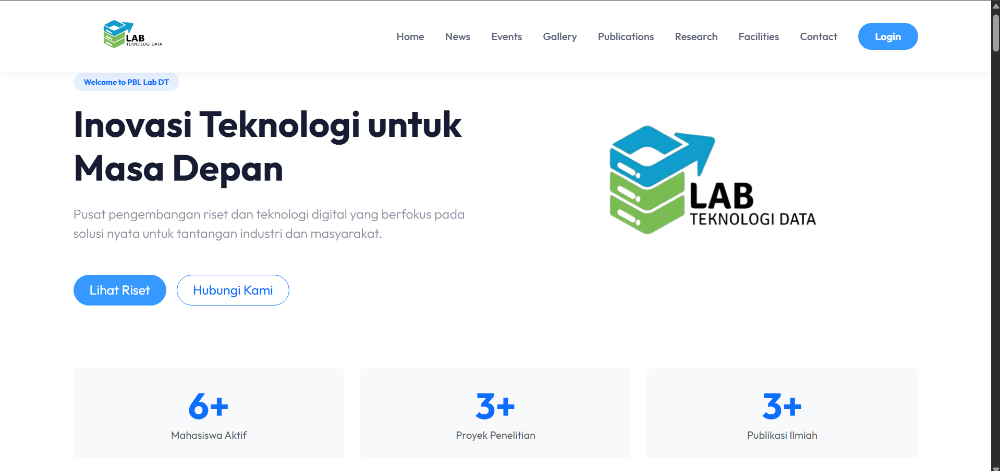
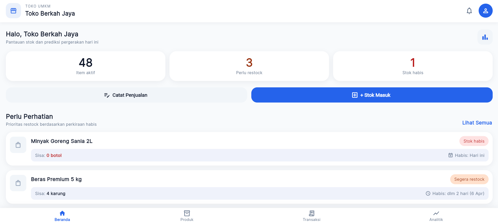

INFOKOM Department, KPMB Malang
An organization under the Balikpapan City Government.
- Visited high schools in Balikpapan to introduce universities in Malang.
- Organized a blood drive with residents of the Permata Jingga housing complex.

Hi, I'm Farrel, an Informatics student at Polinema. I design and build clean, functional web interfaces and enjoy turning data into something useful. Open to internships.
Three semesters, three team projects. Click a title to open its repository.

A website for the DT (Data Technologies) Lab in the Information Technology Department. I contributed to the UI/UX design and its implementation.
FrontendUI/UX
A car rental web system serving the Malang and Surabaya areas. I worked on the UI/UX design and on backend development with Laravel.
FrontendUI/UXLaravel
A mobile app for small businesses that predicts and analyzes product inventory using time series forecasting. I build the backend API and the ML service integration.
BackendTime seriesA comparison of two decision-support methods for selecting village fund cash assistance recipients.
The tools I use to design, build, and ship.
Frontend & Design
Backend & Data
Tools
Also used: DBeaver, pgAdmin, Oracle Database, Laragon. English debate and teamwork from a year of high school debate.
Learning to lead, work in the field, and speak in front of an audience.
An organization under the Balikpapan City Government.
Took part in a community service program where members live for several days in an underserved village to support its physical and non-physical development.
A year of practicing quick thinking, building arguments, and speaking in English.
Hiking taught me patience: no shortcuts, just steady steps. Coding is the same, and the summit and the build success feel alike.
Open to internships and project collaborations.